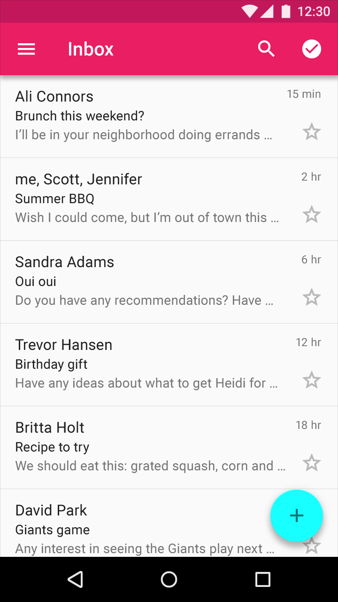

디바이더는 페이지에서 변화와 계층 구조를 세우는 것이 내용물을 어떻게 조직화 하는지를 사용자가 이해하는 것을 돕습니다. 그러나 디바이더의 지나친 사용은 시각적 잡음으로 이어질 수 있고, 그 영향력이 희석될 수 있습니다.
풀 브리드 디바이더(Full-bleed Divider)는 분리된 내용물 영역과 섹션을 강조합니다. 그러나 이러한 확실한 분할이 필요하지 않다면, 여백, 서브 헤더, 또는 인셋 디바이더(Inset Divider)를 사용하는 것을 고려하십시오.
앵커가 없는 아이템
리스트가 아바타나 아이콘 같은 앵커 요소를 갖고 있지 않을 때, 간격 하나만으로는 타일을 구분하기에 충분하지 않습니다. 이 경우에, 풀 브리드 디바이더는 변화를 생성하고 각각의 타일을 구분하는데 도움을 줄 수 있습니다.

풀 브리드 디바이더는 이메일 요약을 분리합니다.
풀 브리드 디바이더는 이메일 화면의 보내는 사람, 받는 사람, 제목과 메세지 부분을 분리합니다.
이미지 기반 내용물
그리드 자신이 시각적 구분을 생성하기 때문에, 그리드 리스트는 내용물에서 서브 헤더를 구분하기 위한 디바이더가 필요 없습니다. 이 경우에, 여백과 서브 헤더는 섹션을 적절히 분리합니다.
여백과 서브 헤더는 사진과 앨범을 분리합니다.
Do.
인셋 디바이더의 적절한 사용은 내용물의 주 섹션의 경계를 구분합니다.
Don't.
풀 브리드 디바이더의 과용은 시각적 잡음을 생성하고 디바이더의 의미를 결국 약화시킵니다.
Don't.
인셋 디바이더는 시각적 잡음을 제거하는 것을 도우며 앵커 요소와 사용되야 합니다. 그러나 과용은 그 의미를 퇴색시킵니다.